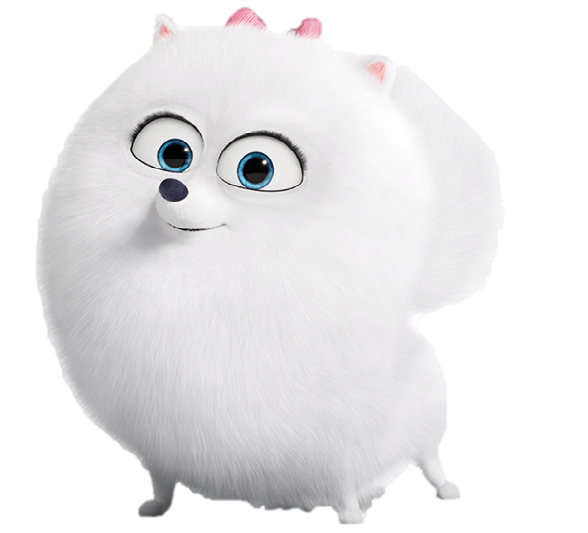
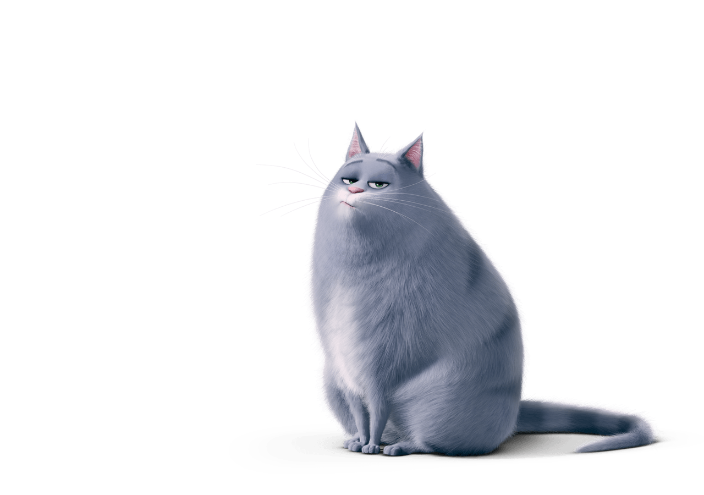
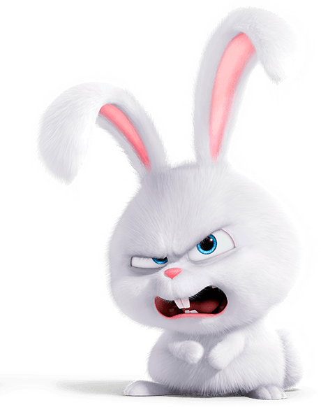
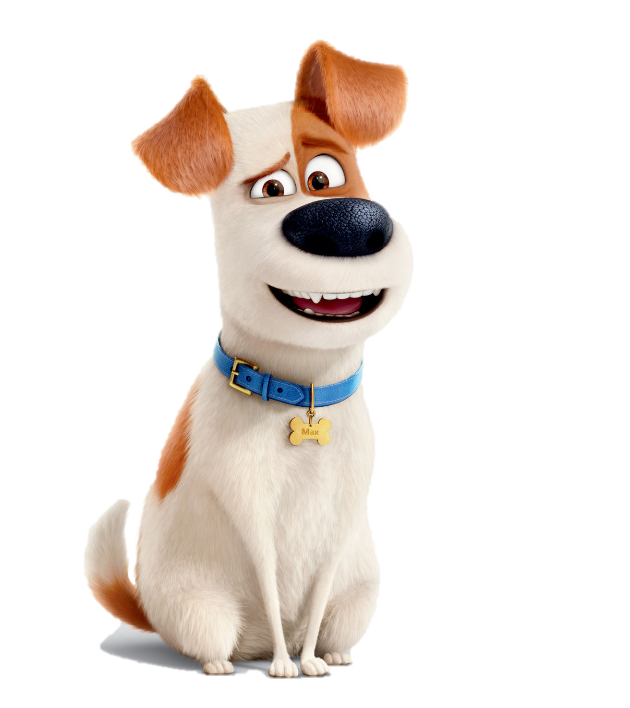

| Фото |
Имя персонажа |
Характеристика |
|---|
|  | Гиджет | Гиджет - собачка породы белый померанский шпиц. Влюблена в Макса. Ей нравятся бразильские сериалы, из которых она черпает вдохновение. |
|  | Хлоя | Хлоя - саркастичный толстая голубоватая кошка, один из главных героев «Тайной жизни домашних животных» |
|  | Снежок | Снежок - белый кролик с длинными ушами, маленькими лапками с розовыми подушечками и пушистым хвостом. У него кривые зубы и способность избавляться от всех выражений, так что он может обмануть людей, думая, что он просто обычный кролик. |
|  | Макс | Макс - главный герой мультфильма Тайная жизнь домашних животных . |